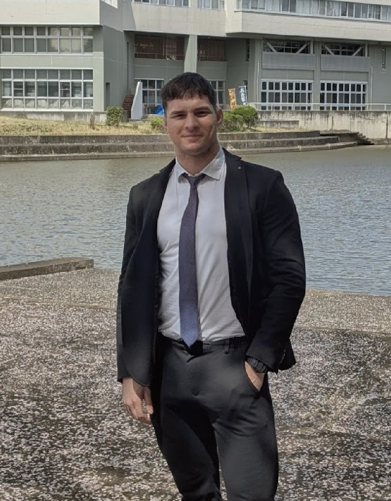
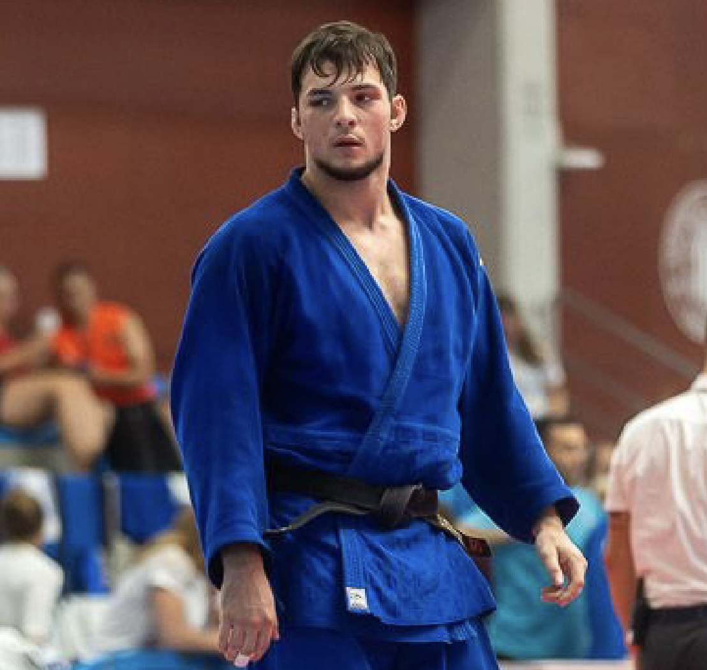
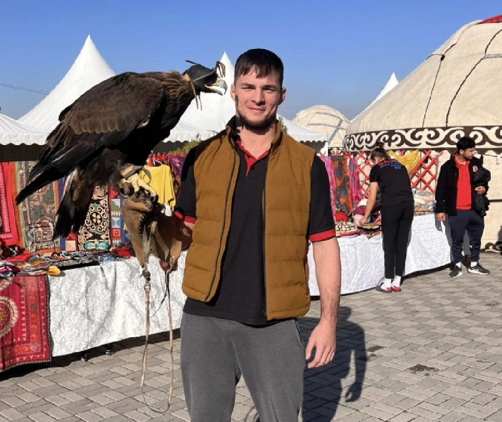

Anton Seitz
Engineering master's student, NLP researcher, and judoka — currently in Japan.
I was one of six people selected from Germany for the MEXT scholarship, and I'm now at the University of Tsukuba studying Intelligent & Mechanical Interaction Systems and researching natural language processing in the Utsuro Lab. Before Japan, I spent three years working on various projects at Bosch.
Right now: large language models in the lab, and training with the University of Tsukuba judo team.
About
A short introduction
I like work that sits between research and something you can actually run. The part I enjoy most is figuring out how language models reason, and where they fall apart. I try to keep what I make small, honest, and well tested.
I grew up between German and Russian, studied in English, and I'm slowly adding Japanese. I came to Japan in 2026 for my master's, drawn as much by the research as by the chance to keep training judo at a serious level.



Work
Experience
Three years at Bosch before Japan, across different departments and locations: an unsupervised anomaly detector for my bachelor thesis, retrieval-augmented data assistants, a local LLM workstation, and a Teams bot in Yokohama. Now I research NLP and large language models full time.
- Researcher, Utsuro NLP LabUniversity of Tsukuba 2026 — now
- Bachelor thesisBosch Vehicle Motion 2025
- Machine learning internBosch Digital, Berlin 2025
- Software engineering internBosch Japan, Yokohama 2024
BSc Computer Science, DHBW Stuttgart.
Off the screen
Judo, and a few other things
I started judo at six, back in Germany, and it has shaped most of my life since. Over the years I competed across Europe and Asia, with a few results I'm happy with: gold at several Asian Cups and Opens. For a long stretch I trained and competed while working through a demanding dual-study degree, which taught me as much about scheduling as about the sport. These days I train with the University of Tsukuba team. The full record is on JudoInside and the IJF.
More than the medals, judo is where I learned to lose well, keep showing up, and trust that small daily reps add up. A lot of how I approach research comes from the same place.
Away from the mat and the keyboard, I'm interested in literature, mathematics, film and manga. I log films on Letterboxd and track anime on MyAnimeList.
Contact
Get in touch
Email is the fastest way to reach me — I read everything and reply to most.